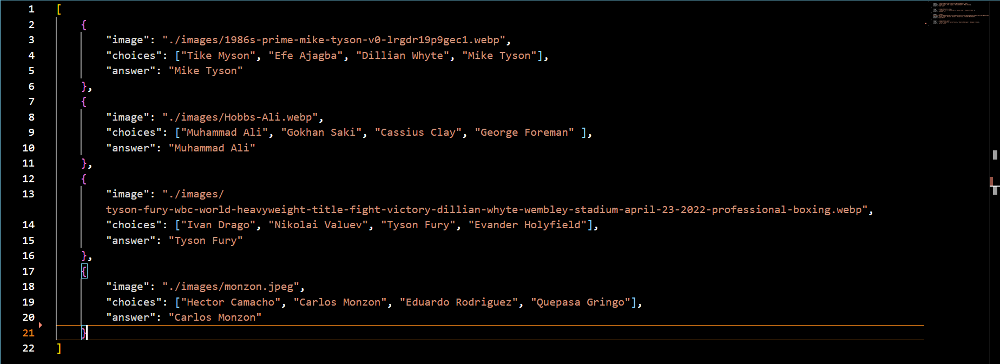
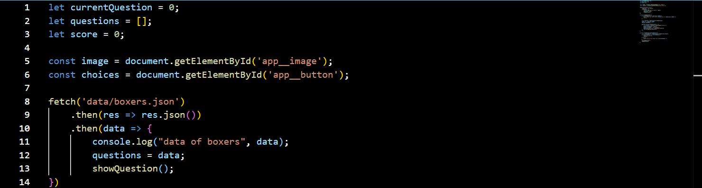

Welkom bij de tutorial
Inleiding
In deze tutorial leer je hoe je een quiz-app maakt met JSON voor de quizvragen, HTML voor de structuur, CSS voor de styling, en JavaScript voor de functionaliteit. Deze app is geschikt voor beginners en gebruikt eenvoudige technologieën die makkelijk te begrijpen zijn.
We hebben nodig:
Visual Studio Code: Dit is het programma waarin de magie zal gebeuren. Download het via deze link
Stap 1:
Maak 4 files aan genaamd: index.html, main.css, boxers.json en app.js
Een korte uitleg over de files:
1. index.html: Het index.html bestand is het belangrijkste HTML-bestand van je project en bevat de structuur van je webpagina. Het wordt geladen wanneer iemand de app in een webbrowser opent. In dit geval bevat het de structuur van de quiz-app.
2. main.css: Het main.css bestand bevat de opmaak van je quiz. Hierin geef je stijlregels die bepalen hoe de verschillende elementen op de pagina eruitzien (zoals kleuren, lettertypen, afmetingen, enz.).
3. Het app.js bestand bevat de JavaScript-code die de functionaliteit van je quiz beheert. Dit bestand is verantwoordelijk voor het ophalen van de vragen, het weergeven ervan aan de gebruiker, het controleren van de antwoorden, en het tonen van het resultaat.
4. Het boxers.json bestand bevat de vragen. JSON (JavaScript Object Notation) is een formaat om gegevens op te slaan en uit te wisselen tussen systemen. Het is leesbaar voor zowel mensen als computers.
Stap 2:
De images folder
Vooraleer we beginnen met code te schrijven gaan we een mapje aanmaken genaamd images. Deze images zullen worden gebruikt in het JSON bestand om een beeld te geven over de persoon in kwestie.

We zetten er de volgende afbeeldingen in om dit voorbeeld na te maken.
Stap 3:
Het JSON bestand

Hierboven zien we het JSON bestand. Zoals eerder gezegd zit al de inhoud in dit bestand. Typ het bovenstaande na. Een JSON bestand is een array met verschillende objecten in. Elk object bestaat uit een afbeelding, de keuzes en het correcte antwoord.
Stap 4:
Javascript

In de reeds aangemaakte javascript file genaamd "app.js" gaan we nu de code invoegen. We gaan het JSON bestand fetchen. Dit wil zeggen dat we de informatie die we in het JSON bestand hebben gezet leesbaar zullen maken in de webbrowser.
Hiernaast doen we nog een paar dingen: Een lege array aanmaken waarin de JSON data zal verschijnen en een score meegeven. Dit is belangrijk om later te weten wat de score op 6 is (dit is afhankelijk van hoeveel objecten we hebben in het JSON bestand.)